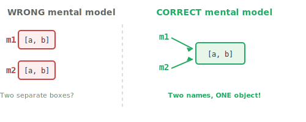
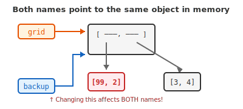
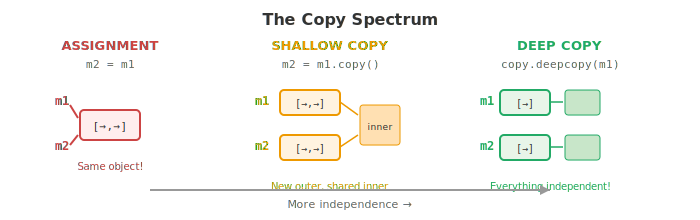
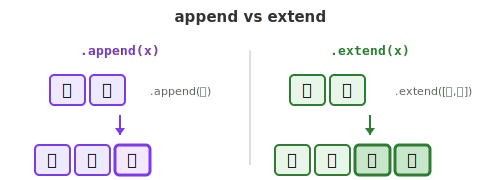
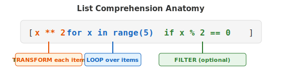
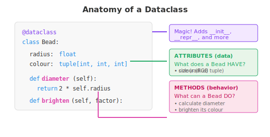
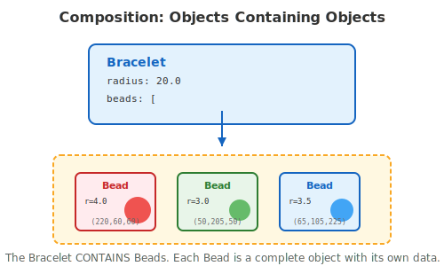
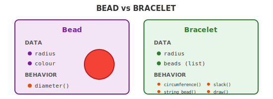
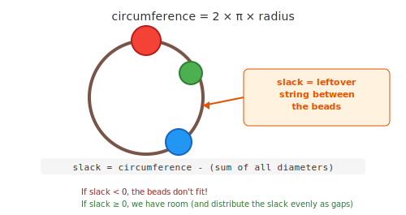
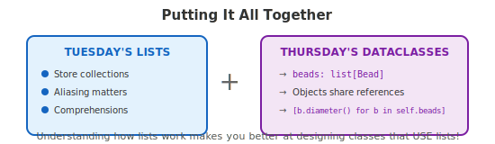

Week 3: Lists & Custom Types
This week we learned two powerful ways to organize data: mastering the quirks of Python’s lists, and creating our own custom types with dataclasses. Let’s tie it all together!
Your Growing Toolkit
Every problem we solve uses some combination of these tools:
- Representation — how we encode meaning (binary, types, RGB)
- Collections — how we group things (lists, tuples, dicts)
- Control flow — how we make decisions and repeat (if/else, loops)
- Functions — how we name and reuse logic
- Abstraction — how we hide complexity
- Efficiency — how we measure cost (summations, timing analysis)
The pattern: learn a new tool, use it to solve a harder problem.
This week: Lists (deep dive) + Dataclasses (new tool!) → Bracelets
The Big Picture

These ideas combine powerfully: a Bracelet is a dataclass that contains a list of Bead objects!
Tuesday: Lists
Lists seem simple… until they surprise you. Understanding why they behave the way they do requires thinking about how Python handles memory.
The Mental Model: Names, Not Boxes
Here’s the key insight that explains everything about list behavior:
Variables are sticky notes, not boxes.

When you write m2 = m1, you’re not copying the list—you’re sticking a second name to the same list!
Aliasing: The Plot Twist
grid = [[1, 2], [3, 4]]
backup = grid # <- This does NOT copy!
grid[0][0] = 99
print(grid) # [[99, 2], [3, 4]]
print(backup) # [[99, 2], [3, 4]] <- SURPRISE!Both names point to the same object in memory:

The Copy Spectrum
Not all copies are created equal!

When to use each:
| Situation | Use |
|---|---|
| Just another name for the same list | = assignment |
| Flat list (no nested lists) | .copy() |
| Nested structures (lists of lists) | copy.deepcopy() |
append vs extend
These look similar but do very different things:
provinces = ['BC']
provinces.append('Alberta') # Adds ONE element
# ['BC', 'Alberta']
provinces.extend(['ON', 'QC']) # Adds EACH element
# ['BC', 'Alberta', 'ON', 'QC']
provinces.append(['NS', 'NB']) # Adds the LIST as one element!
# ['BC', 'Alberta', 'ON', 'QC', ['NS', 'NB']] <- Probably not what you wanted!
List Comprehensions: Compact & Powerful
Instead of building lists with loops:
# The long way
squares = []
for x in range(5):
squares.append(x ** 2)Write it in one line:
# The comprehension way
squares = [x ** 2 for x in range(5)]
# [0, 1, 4, 9, 16]Add conditions to filter:
evens = [x for x in range(10) if x % 2 == 0]
# [0, 2, 4, 6, 8]
Thursday: Designing Our Own Types
Built-in types are great, but what if we need to represent something specific—like a bead with a radius and color?
Dataclasses: Data + Behavior in One Package
from dataclasses import dataclass
@dataclass
class Bead:
radius: float
colour: tuple[int, int, int] # RGB!
def diameter(self) -> float:
return 2 * self.radiusNow we can create bead objects:
red_bead = Bead(radius=5.0, colour=(255, 0, 0))
print(red_bead.radius) # 5.0
print(red_bead.diameter()) # 10.0
Composition: Objects Containing Objects
A Bracelet contains Bead objects—this is composition!
@dataclass
class Bracelet:
radius: float
beads: list[Bead] # <- A list of our custom type!
Design: Who Owns What?
When designing with dataclasses, ask:
- What are the nouns? → These become your classes
- What data does each noun have? → These become attributes
- What can each noun do? → These become methods

Notice how Bracelet.slack() needs to use Bead.diameter()—objects collaborate!
Do the Beads Fit?
The beads fit on a bracelet if the sum of their diameters ≤ the circumference. The leftover string is called slack.
= 0 we have room.">
Putting It All Together
This week’s concepts connect beautifully:

Your toolkit is growing!
Quick Reference
Lists
| Operation | What it does |
|---|---|
m2 = m1 |
Creates another name for the SAME list |
m2 = m1.copy() |
New outer list, inner objects shared |
m2 = copy.deepcopy(m1) |
Completely independent copy |
lst.append(x) |
Adds x as ONE element |
lst.extend(x) |
Adds EACH element from x |
[expr for x in lst if cond] |
List comprehension |
Dataclasses
| Concept | Example |
|---|---|
| Define a class | @dataclass + class Name: |
| Attributes | radius: float |
| Methods | def diameter(self) -> float: |
| Create an object | Bead(radius=5.0, colour=(255,0,0)) |
| Access attribute | my_bead.radius |
| Call method | my_bead.diameter() |
| Composition | beads: list[Bead] |
What’s Next?
With lists and dataclasses, you can now model complex real-world things! Next week we’ll explore how to make our programs handle the unexpected gracefully—and how to verify they actually work.
Happy coding! 🎨